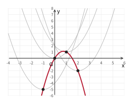
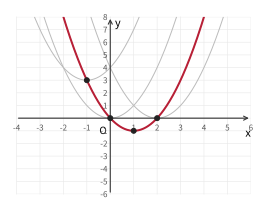
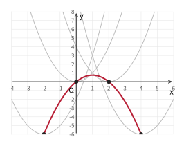

別冊練習問題 6 の解答 放物線の頂点の軌跡
(1) 放物線 \(y=x^2-2kx-1k^2+3k\) の頂点は、\(k\) がすべての実数値をとって変化するとき、どんな曲線を描くか。その方程式を求めよ。
頂点の座標
\[y=x^2-2kx-1k^2+3k=(x-1k)^2-2k^2+3k\]
頂点 \((x,y)=(k,\ - 2 k^{2} + 3 k)\)。
\(k\) を消去
\(x=k\) より \(k=x\)。これを \(y\) に代入。
\[y=- 2 x^{2} + 3 x\]
軌跡
\(k\) はすべての実数をとれるので、放物線全体。
【答案】
\[y=- 2 x^{2} + 3 x\]答
(2) 放物線 \(y=x^2-2kx+2k^2-2k\) の頂点は、\(k\) がすべての実数値をとって変化するとき、どんな曲線を描くか。その方程式を求めよ。
頂点の座標
\[y=x^2-2kx+2k^2-2k=(x-1k)^2+1k^2-2k\]
頂点 \((x,y)=(k,\ k^{2} - 2 k)\)。
\(k\) を消去
\(x=k\) より \(k=x\)。これを \(y\) に代入。
\[y=x^{2} - 2 x\]
軌跡
\(k\) はすべての実数をとれるので、放物線全体。
【答案】
\[y=x^{2} - 2 x\]答
(3) 放物線 \(y=x^2-4kx+1k^2+3k\) の頂点は、\(k\) がすべての実数値をとって変化するとき、どんな曲線を描くか。その方程式を求めよ。
頂点の座標
\[y=x^2-4kx+1k^2+3k=(x-2k)^2-3k^2+3k\]
頂点 \((x,y)=(2 k,\ - 3 k^{2} + 3 k)\)。
\(k\) を消去
\(x=2 k\) より \(k=\dfrac{x}{2}\)。これを \(y\) に代入。
\[y=- \dfrac{3 x^{2}}{4} + \dfrac{3 x}{2}\]
軌跡
\(k\) はすべての実数をとれるので、放物線全体。
【答案】
\[y=- \dfrac{3 x^{2}}{4} + \dfrac{3 x}{2}\]答